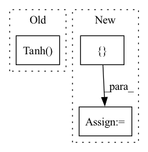

Pattern ID :23507
Before Change
self.first_linear = nn.Linear(in_dim, hidden_dim)
self.hidden_layers = nn.ModuleList(
[nn.Linear(hidden_dim, hidden_dim) for _ in range(num_layers)])
self.tanh = nn.Tanh()
self.mdn = MDNLayer(hidden_dim, out_dim, num_gaussians=num_gaussians)
self.prediction_type="probabilistic"
def forward(self, x, lengths=None):
out = self.tanh(self.first_linear(x))After Change
if num_layers > 1:
for _ in range(num_layers - 1):
model += [nn.Linear(hidden_dim, hidden_dim), nn.ReLU()]
model += [ MDNLayer(hidden_dim, out_dim, num_gaussians=num_gaussians)In pattern: SUPERPATTERN
Frequency: 3
Non-data size: 3
Instances Fragment ID: 73769733
Project Name: r9y9/nnsvs
Commit Name: 3a55678dd65a885ab71d052024dc329e00007bb0
Time: 2020-09-30
Author: taroushirani@gmail.com
File Name: nnsvs/model.py
M Class Name: MDN
N Class Name: MDN
M Method Name: __init__(7)
N Method Name: __init__(7)
M Parent Class: nn.Module
N Parent Class: nn.Module
M File Name: nnsvs/model.py
N File Name: nnsvs/model.py
M Start Line: 105
M End Line: 109
N Start Line: 107
N End Line: 112
Before Change
self.net = nn.Sequential(
nn.Linear(in_channels, n_hidden), // 2 states, 1 input
nn.Tanh() ,
nn.Linear(n_hidden, out_channels)
)
After Change
def __init__(self, in_channels, out_channels, n_hidden=20, activation="tanh"):
super(StaticMimoNonLin, self).__init__()
activation_dict = { "tanh": nn.Tanh, "relu": nn.ReLU, "sigmoid": nn.Sigmoid}
self.net = nn.Sequential(
nn.Linear(in_channels, n_hidden),
activation_dict[activation](), //nn.Tanh(), Fragment ID: 73769734
Project Name: forgi86/dynonet
Commit Name: bb0cdda638ec31003384d80d05cb519564976135
Time: 2020-05-21
Author: marco.forgione@supsi.ch
File Name: torchid/module/static.py
M Class Name: StaticMimoNonLin
N Class Name: StaticMimoNonLin
M Method Name: __init__(5)
N Method Name: __init__(4)
M Parent Class: nn.Module
N Parent Class: nn.Module
M File Name: torchid/module/static.py
N File Name: torchid/module/static.py
M Start Line: 32
M End Line: 32
N Start Line: 28
N End Line: 35
Before Change
if output_nonlinear is not None:
if output_nonlinear == "tanh":
end_net.append(nn.Tanh() )
elif output_nonlinear == "softmax":
end_net.append(nn.Softmax(dim=1))
else:After Change
"dim": 1
}
else:
kwargs = {}
module = choose_nonlinear(output_nonlinear, **kwargs)
end_net.append(module)
Fragment ID: 73769737
Project Name: tky823/dnn-based_source_separation
Commit Name: 10282099ca12b94e9b9870841d4de0252506baab
Time: 2021-12-05
Author: delta9guitar97@gmail.com
File Name: src/models/wavenet.py
M Class Name: WaveNet
N Class Name: WaveNet
M Method Name: __init__(19)
N Method Name: __init__(19)
M Parent Class: nn.Module
N Parent Class: nn.Module
M File Name: src/models/wavenet.py
N File Name: src/models/wavenet.py
M Start Line: 24
M End Line: 39
N Start Line: 33
N End Line: 41